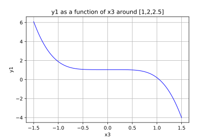
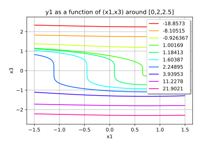

Function manipulation¶
In this example we are going to exhibit some of the generic function services such as:
- to ask the dimension of its input and output vectors
- to evaluate itself, its gradient and hessian
- to set a finite difference method for the evaluation of the gradient or the hessian
- to evaluate the number of times the function or its gradient or its hessian have been evaluated
- to disable or enable (enabled by default) the history mechanism
- to disable or enable the cache mechanism
- to get all the values evaluated by the function and the associated inputs with the methods
- to clear the history
- to ask the description of its input and output vectors
- to extract output components
- to get a graphical representation
In [1]:
from __future__ import print_function
import openturns as ot
import math as m
In [2]:
# Create a vectorial function R ^n --> R^p
# for example R^2 --> R^2
f = ot.SymbolicFunction(['x1', 'x2'], ['1+2*x1+x2', '2+x1+2*x2'])
# Create a scalar function R --> R
func1 = ot.SymbolicFunction(['x'], ['x^2'])
# Create another function R^2 --> R
func2 = ot.SymbolicFunction(['x', 'y'], ['x*y'])
# Create a vectorial function R ^3 --> R^2
func3 = ot.SymbolicFunction(['x1', 'x2', 'x3'], ['1+2*x1+x2+x3^3', '2+sin(x1+2*x2)-sin(x3) * x3^4'])
# Create a second vectorial function R ^n --> R^p
# for example R^2 --> R^2
g = ot.SymbolicFunction(['x1', 'x2'], ['x1+x2', 'x1^2+2*x2^2'])
def python_eval(X):
a, b = X
y = a+b
return [y]
func4 = ot.PythonFunction(2, 1, python_eval)
In [3]:
# Ask for the dimension of the input and output vectors
print(f.getInputDimension())
print(f.getOutputDimension())
2
2
In [4]:
# Enable the history mechanism
f = ot.MemoizeFunction(f)
In [5]:
# Evaluate the function at a particular point
x = [1.0] * f.getInputDimension()
y = f(x)
print('x=', x, 'y=', y)
x= [1.0, 1.0] y= [4,5]
In [6]:
# Get the history
samplex = f.getInputHistory()
sampley = f.getOutputHistory()
print('evaluation history = ', samplex, sampley)
evaluation history = 0 : [ 1 1 ] 0 : [ 4 5 ]
In [7]:
# Clear the history mechanism
f.clearHistory()
In [8]:
# Disable the history mechanism
f.disableHistory()
In [9]:
# Enable the cache mecanism
f4 = ot.MemoizeFunction(func4)
f4.enableCache()
for i in range(10):
f4(x)
In [10]:
# Get the number of times cached values are reused
f4.getCacheHits()
Out[10]:
9
In [11]:
# Evaluate the gradient of the function at a particular point
gradientMatrix = f.gradient(x)
gradientMatrix
Out[11]:
[[ 2 1 ]
[ 1 2 ]]
In [12]:
# Evaluate the hessian of the function at a particular point
hessianMatrix = f.hessian(x)
hessianMatrix
Out[12]:
sheet #0
[[ 0 0 ]
[ 0 0 ]]
sheet #1
[[ 0 0 ]
[ 0 0 ]]
In [13]:
# Change the gradient method to a non centered finite difference method
step = [1e-7] * f.getInputDimension()
gradient = ot.NonCenteredFiniteDifferenceGradient(step, f.getEvaluation())
f.setGradient(gradient)
gradient
Out[13]:
NonCenteredFiniteDifferenceGradient epsilon : [1e-07,1e-07]
In [14]:
# Change the hessian method to a centered finite difference method
step = [1e-7] * f.getInputDimension()
hessian = ot.CenteredFiniteDifferenceHessian(step, f.getEvaluation())
f.setHessian(hessian)
hessian
Out[14]:
CenteredFiniteDifferenceHessian epsilon : [1e-07,1e-07]
In [15]:
# Get the number of times the function has been evaluated
f.getEvaluationCallsNumber()
Out[15]:
1
In [16]:
# Get the number of times the gradient has been evaluated
f.getGradientCallsNumber()
Out[16]:
0
In [17]:
# Get the number of times the hessian has been evaluated
f.getHessianCallsNumber()
Out[17]:
0
In [18]:
# Get the component i
f.getMarginal(1)
Out[18]:
[x1,x2]->[2+x1+2*x2]
In [19]:
# Compose two functions : h = f o g
ot.ComposedFunction(f, g)
Out[19]:
([x1,x2]->[1+2*x1+x2,2+x1+2*x2])o([x1,x2]->[x1+x2,x1^2+2*x2^2])
In [20]:
# Get the valid symbolic constants
ot.SymbolicFunction.GetValidConstants()
Out[20]:
[e_ -> Euler's constant (2.71828...),pi_ -> Pi constant (3.14159...)]
In [21]:
# Graph 1 : z --> f_2(x_0,y_0,z)
# for z in [-1.5, 1.5] and y_0 = 2. and z_0 = 2.5
# Specify the input component that varies
# Care : numerotation begins at 0
inputMarg = 2
# Give its variation intervall
zMin = -1.5
zMax = 1.5
# Give the coordinates of the fixed input components
centralPt = [1.0, 2.0, 2.5]
# Specify the output marginal function
# Care : numerotation begins at 0
outputMarg = 1
# Specify the point number of the final curve
ptNb = 101
# Draw the curve!
func3.draw(inputMarg, outputMarg, centralPt, zMin, zMax, ptNb)
Out[21]:

In [22]:
# Graph 2 : (x,z) --> f_1(x,y_0,z)
# for x in [-1.5, 1.5], z in [-2.5, 2.5]
# and y_0 = 2.5
# Specify the input components that vary
firstInputMarg = 0
secondInputMarg = 2
# Give their variation interval
inputMin2 = [-1.5, -2.5]
inputMax2 = [1.5, 2.5]
# Give the coordinates of the fixed input components
centralPt = [0.0, 2., 2.5]
# Specify the output marginal function
outputMarg = 1
# Specify the point number of the final curve
ptNb = [101, 101]
func3.draw(firstInputMarg, secondInputMarg,
outputMarg, centralPt, inputMin2, inputMax2, ptNb)
Out[22]:

In [23]:
# Graph 3 : simplified method for x --> func1(x)
# for x in [-1.5, 1.5]
# Give the variation interval
xMin3 = -1.5
xMax3 = 1.5
# Specify the point number of the final curve
ptNb = 101
# Draw the curve!
func1.draw(xMin3, xMax3, ptNb)
Out[23]:

In [24]:
# Graph 4 : (x,y) --> func2(x,y)
# for x in [-1.5, 1.5], y in [-2.5, 2.5]
# Give their variation interval
inputMin4 = [-1.5, -2.5]
inputMax4 = [1.5, 2.5]
# Give the coordinates of the fixed input components
centralPt = [0.0, 2., 2.5]
# Specify the output marginal function
outputMarg = 1
# Specify the point number of the final curve
ptNb = [101, 101]
func2.draw(inputMin4, inputMax4, ptNb)
Out[24]: